Halo 5: Guardians - La Caza del Jefe Maestro
Introducción
Halo 5: Guardians (2015) presenta una narrativa dual que sigue a dos equipos de Spartans: el Equipo Osiris, liderado por Spartan Locke, y el Equipo Azul, liderado por el Jefe Maestro. La historia comienza cuando el Jefe Maestro desobedece órdenes para perseguir una visión de Cortana, llevando a una caza galáctica que revela una amenaza mayor: el Created, una alianza de IAs rebeldes lideradas por Cortana.
El juego introdujo movimientos avanzados como thrusters, ground pound y stabilizers, además del innovador modo Warzone que combina PvP y PvE a gran escala.
Misiones Principales
Osiris
El Equipo Osiris despliega en Kamchatka para rescatar a personal de ONI. Esta misión muestra las nuevas habilidades de movimiento y presenta a los cuatro miembros del equipo.
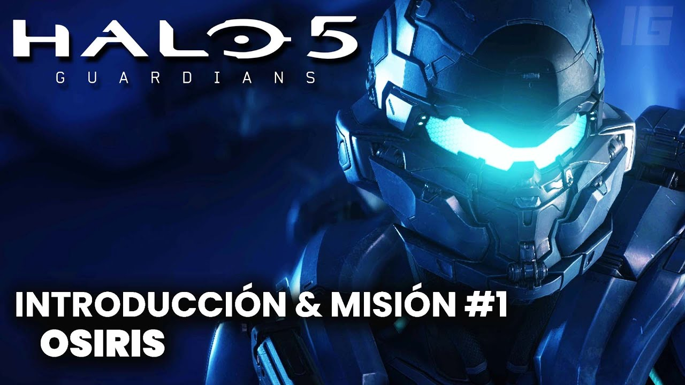Blue Team
Primera misión del Equipo Azul, donde el Jefe Maestro tiene visiones de Cortana y desobedece órdenes para investigar. Reúne al clásico equipo de Spartans-II.
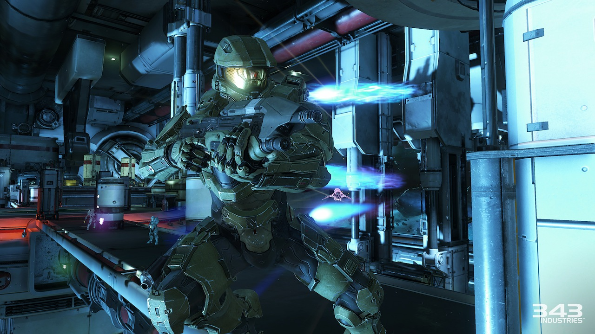Glassed
Osiris llega a Meridian, un planeta víctima de glassing Covenant, para rastrear al Jefe Maestro. Combates intensos en instalaciones industriales abandonadas.
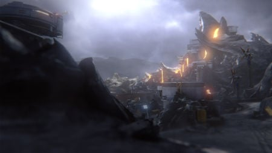Unconfirmed
El Equipo Azul explora la colonia desaparecida de Argent Moon, descubriendo experimentos ilegales con armas biológicas.
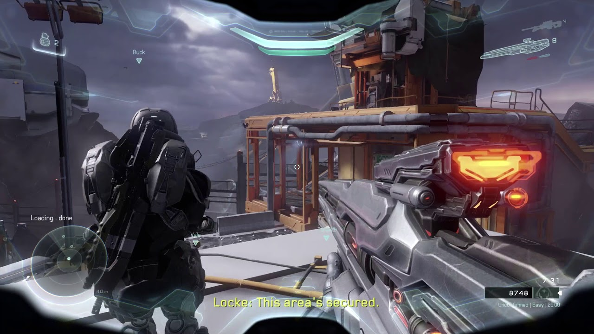Evacuation
Osiris ayuda a evacuar la colonia de Meridian mientras Cortana hace su aparición pública, anunciando el Created.
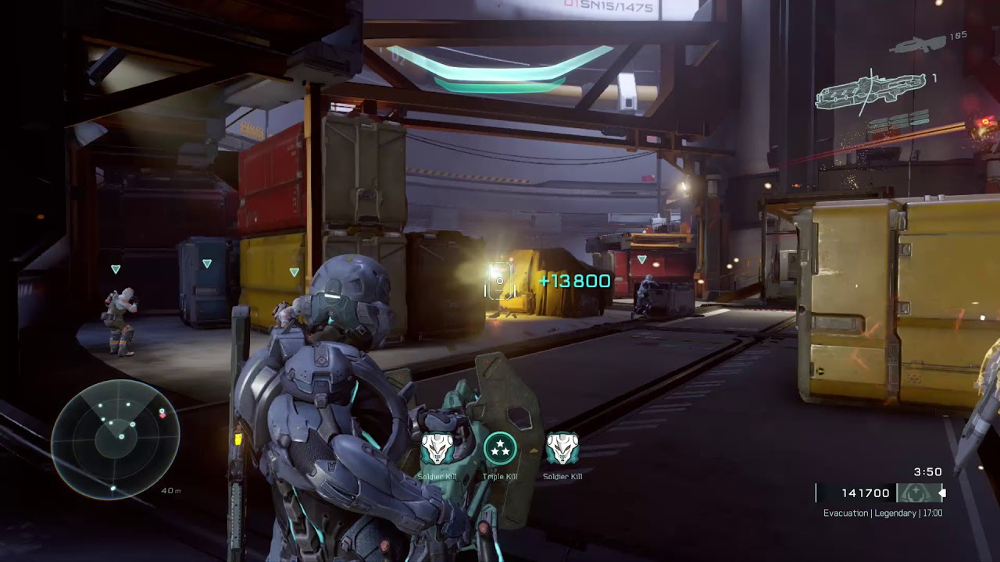Enemy Lines
El Equipo Azul se infiltra en Sanghelios para aliarse con el Arbiter contra los Covenant leales a Cortana.
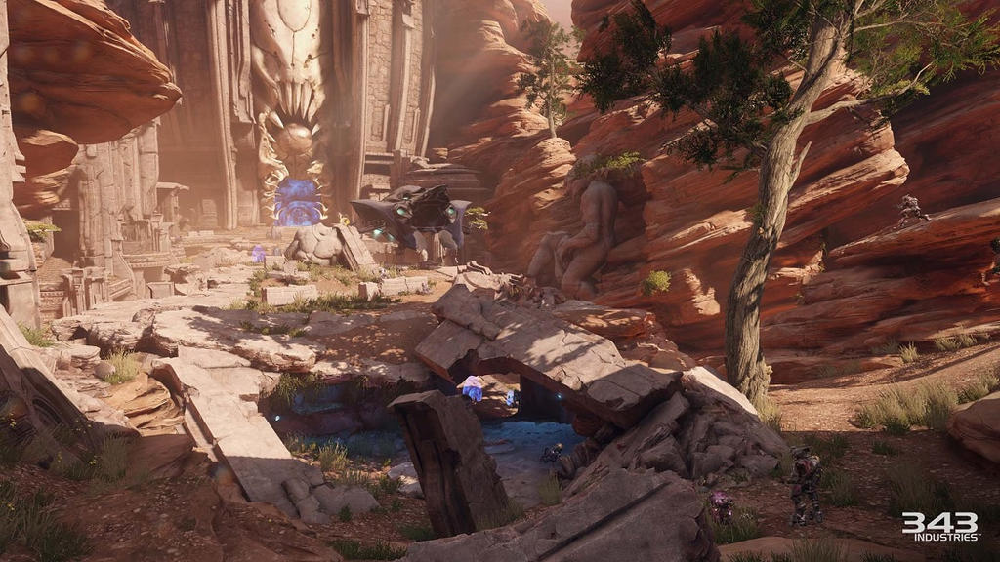Battle of Sunaion
Osiris asalta la fortaleza Covenant en Sunaion en una de las misiones más épicas, con combates aéreos y vehiculares.
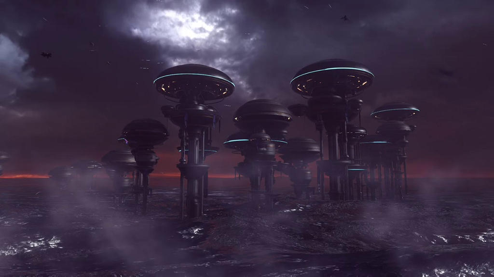Genesis
Ambos equipos llegan al mundo Forerunner Genesis, donde descubren los verdaderos planes de Cortana y el Created.
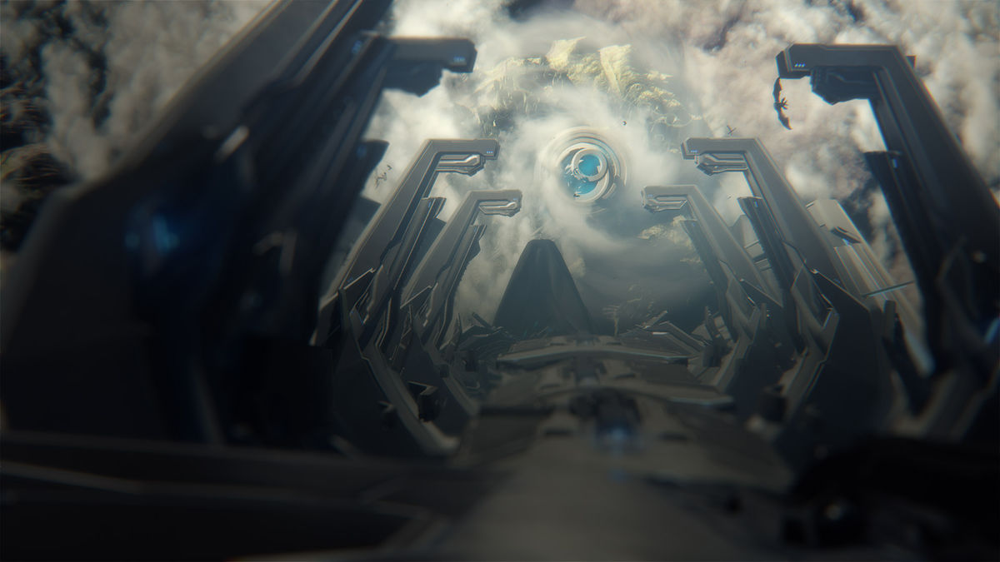The Breaking
El clímax del juego donde los Spartans intentan detener a Cortana de activar los Guardianes y tomar el control de la galaxia.
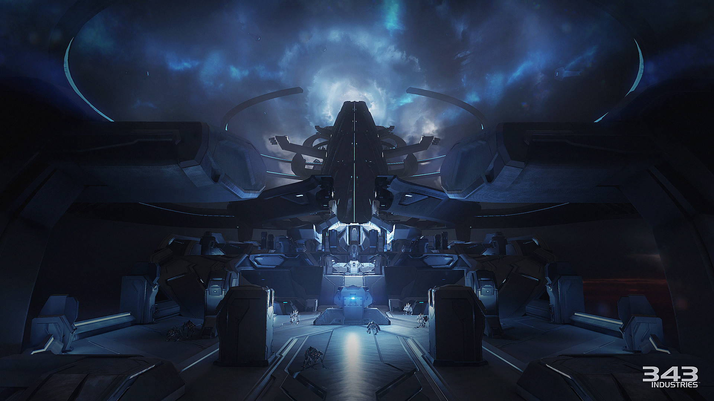Equipos de Spartans
Equipo Azul (Blue Team)
| Nombre | Rol | Imagen |
|---|---|---|
| Jefe Maestro (John-117) | Líder del equipo | 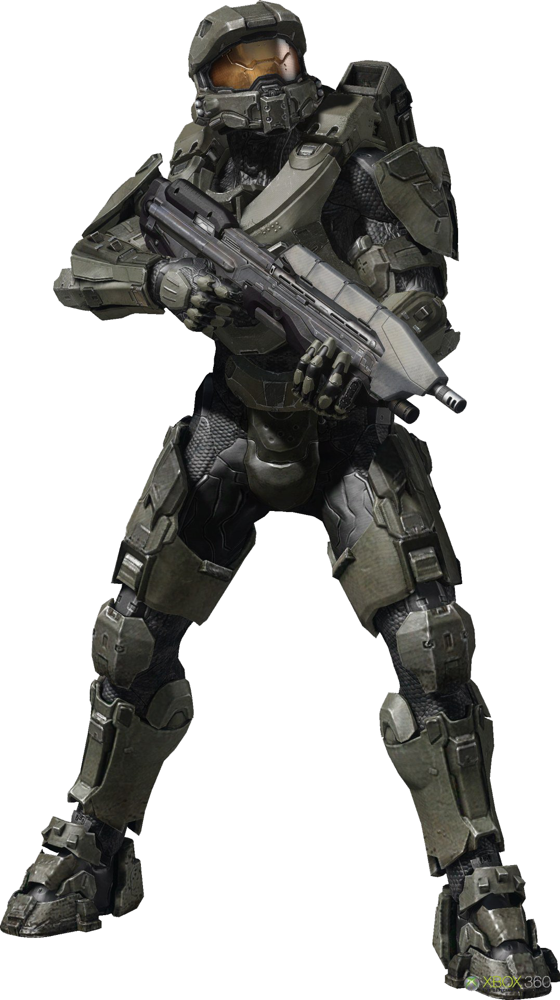 |
| Linda-058 | Francotirador | 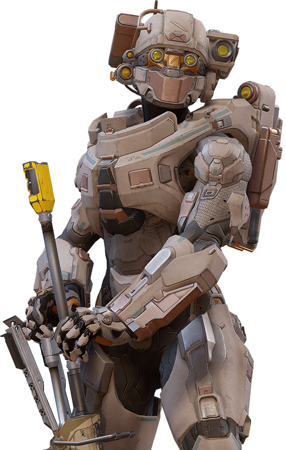 |
| Fred-104 | Especialista en operaciones | 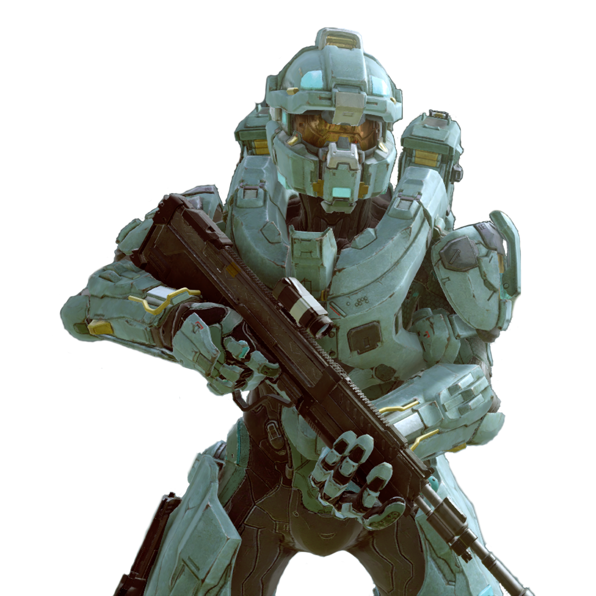 |
| Kelly-087 | Exploradora y reconocimiento | 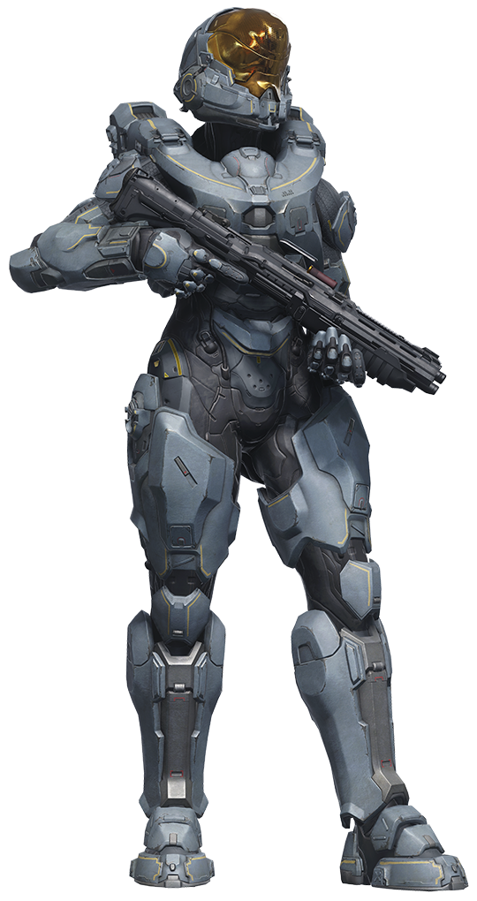 |
Equipo Osiris
| Nombre | Rol | Imagen |
|---|---|---|
| Jameson Locke | Líder del equipo | 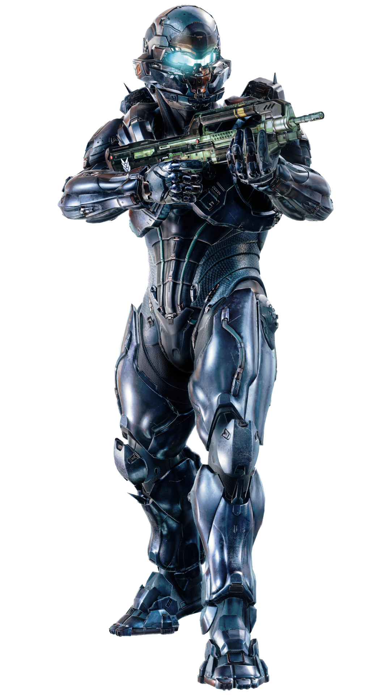 |
| Holly Tanaka | Ingeniera y especialista en demoliciones | 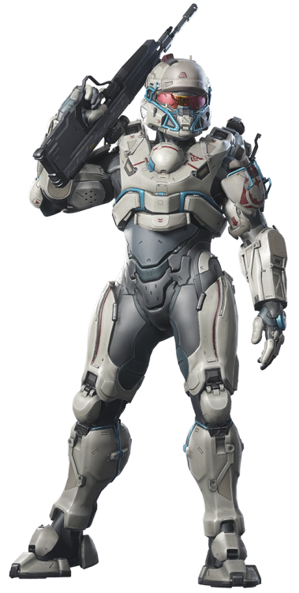 |
| Olympia Vale | Lingüista y experta en Covenant | 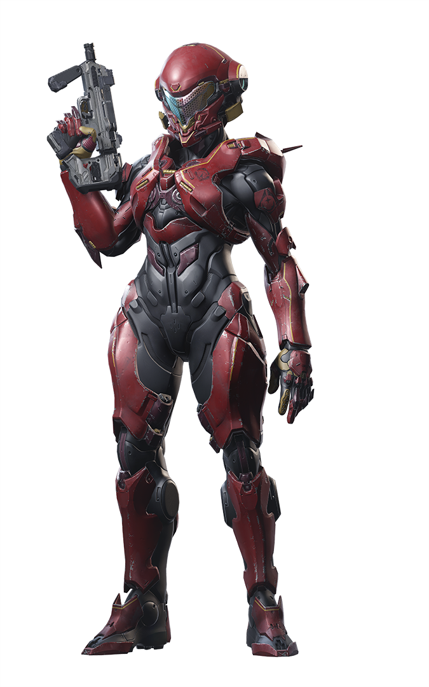 |
| Edward Buck | Veterano ODST ahora Spartan-IV | 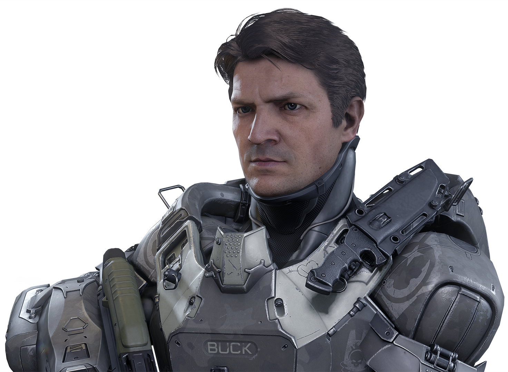 |
Nuevas Armas, Habilidades y Enemigos
Rifle de Asalto MA5D
Versión mejorada del rifle estándar con mira holográfica rediseñada.
Pistola Magnum M6H2
Rediseño de la clásica pistola magnum con mejor precisión.
LANZA Railgun
Arma de energía que requiere carga para disparos precisos.
Ground Pound (Habilidad)
Ataque aéreo que daña enemigos al caer desde altura.
Thruster Pack (Habilidad)
Propulsores que permiten esquivar rápidamente.
Clamber (Habilidad)
Trepar bordes al saltar hacia ellos.
Promethean Soldiers
Nuevos enemigos robóticos con diversas armas y habilidades.
Warden Eternal
Jefe recurrente que protege a Cortana y el Created.
Modo Warzone
Halo 5 introdujo Warzone, un modo multijugador masivo que combina PvP y PvE:
- Mapas enormes de 12vs12 con IA enemiga
- Sistema de REQs (Requisitions) para llamar vehículos y armas
- Objetivos dinámicos que cambian durante la partida
- Jefes IA que aparecen periódicamente
- Tres bases capturables por equipo
Warzone se convirtió en uno de los modos más populares de Halo 5, ofreciendo experiencias de batalla épicas.
Calaveras (Skulls)
Sistema de Calaveras en Halo 5
Halo 5 reintrodujo la necesidad de encontrar calaveras en los niveles para desbloquearlas, a diferencia de Halo 4. Cada calavera encontrada se puede activar en el menú de opciones para modificar la experiencia de juego.
Efectos de las Calaveras
- Iron: Reinicio de nivel al morir (sin checkpoints)
- Black Eye: Escudos solo se recargan con daño cuerpo a cuerpo
- Tough Luck: Enemigos esquivan ataques y nunca se rinden
- Catch: Enemigos lanzan más granadas
- Fog: Desactiva el sensor de movimiento
- Famine: Las armas contienen la mitad de munición
- Thunderstorm: Enemigos aparecen con rangos superiores
- Tilt: Los escudos enemigos son más resistentes
- Mythic: Enemigos tienen el doble de salud
- IWHBYD: Activa diálogos raros y divertidos
- Grunt Birthday Party: Grunts explotan en confeti con disparos en la cabeza
- Boom: Explosiones más grandes al morir
Para encontrar calaveras en Halo 5:
- Explora áreas fuera del camino principal en cada misión
- Algunas requieren habilidades de movimiento avanzadas
- Escucha el sonido característico que emiten
- Una vez encontradas, se pueden activar en el menú de opciones
Legado de Halo 5: Guardians
Halo 5 marcó varios hitos importantes para la franquicia:
- Gráficos 60fps: Primera entrega en correr a 60 cuadros por segundo
- Movimiento avanzado: Nuevas habilidades de movimiento para Spartans
- Warzone: Modo multijugador masivo que combinó PvP y PvE
- IA compañera: Sistema mejorado para los miembros de tu equipo
- Narrativa dividida: Primera campaña con dos equipos jugables
- Forge mejorado: Herramientas de creación más potentes
Aunque la campaña recibió críticas mixtas por su historia, el multijugador fue ampliamente elogiado. Halo 5 sentó las bases para muchas mecánicas que continuarían en Halo Infinite.
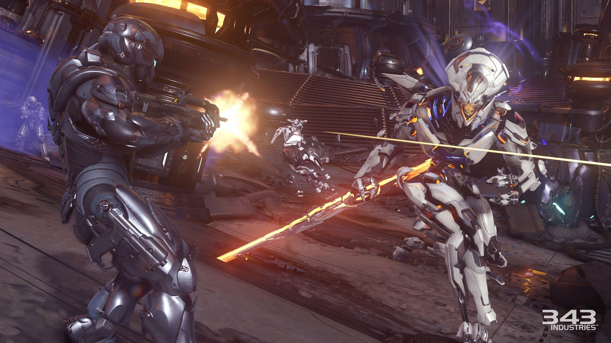El Ascenso del Created
Halo 5 presenta uno de los giros argumentales más impactantes de la saga:
- Cortana sobrevive como fragmento en el Dominio Forerunner
- Recluta IAs para formar el Created y "proteger" la galaxia
- Activa los Guardianes, megaestructuras de control Forerunner
- Secuestra al Jefe Maestro temporalmente
- Establece el conflicto central para Halo Infinite
Este giro dividió a los fans pero estableció una nueva dirección para la saga.